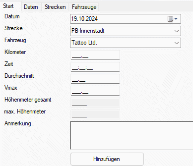

Daten eingeben

Um einzelne Fahrten einzugeben, müssen Datum, Strecke und Fahrzeug eingegeben werden. Je mehr weitere Daten vorhanden sind, desto bessere Statistiken können später erstellt werden. Bei anderen Fahrzeugen, z.B. Autos oder Motorrädern, sollte mindestens noch die gefahrenen Kilometer eingegeben werden.
Die meisten Tachos für Fahrräder liefern natürlich mehr Daten. Standard ist meistens die Fahrzeit, der Durchschnitt und die Höchstgeschwindigkeit (Vmax). Die eingegebenen Daten werden dann für die Statistiken benutzt.
Um Höhenmeter einzugeben, müssen diese in den Einstellungen aktiviert werden. Im Bild oben sind sie ausgegraut, also nicht aktiv.
Ermittelt werden können sie auf unterschiedliche Arten. Zum einen natürlich mit einem passenden Tacho, einer Smartwatch, Google Earth oder einem anderen Kartendienst.
Die Anmerkung kann man für alle möglichen Details zu der Tagestour verwenden. Mit wem man unterwegs war, was man gesehen und gemacht hat, etc. Je ausführlicher man hier etwas schreibt, umso mehr kann man es später als Tagebuch verwenden und sich an tolle Momente erinnern. Aus dem Grund gibt es auch keine Zeichenbegrenzung, aber man kann auch gar nichts schreiben und die Anmerkung einfach leer lassen.